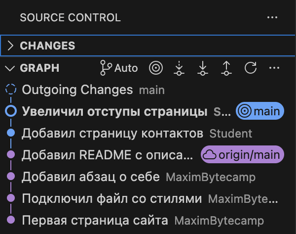
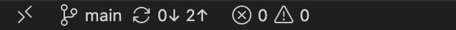
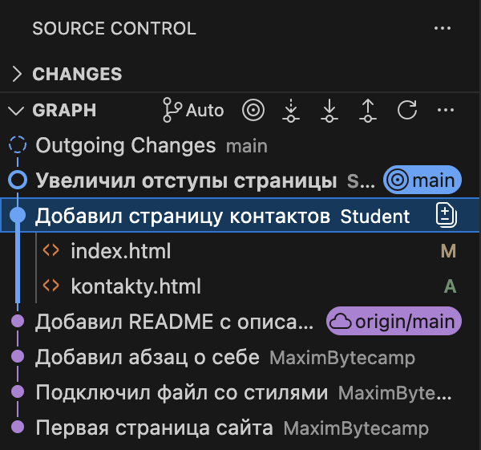
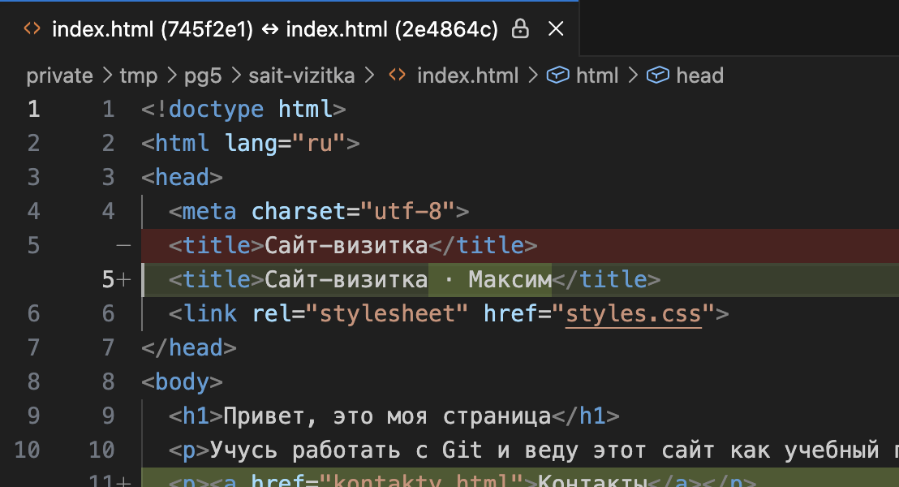
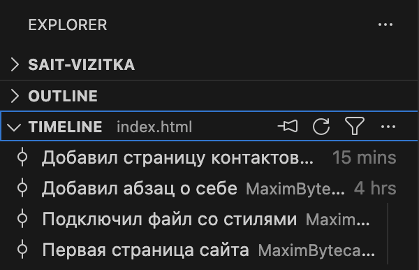
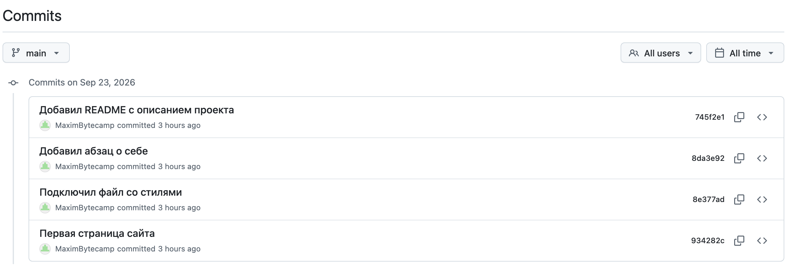
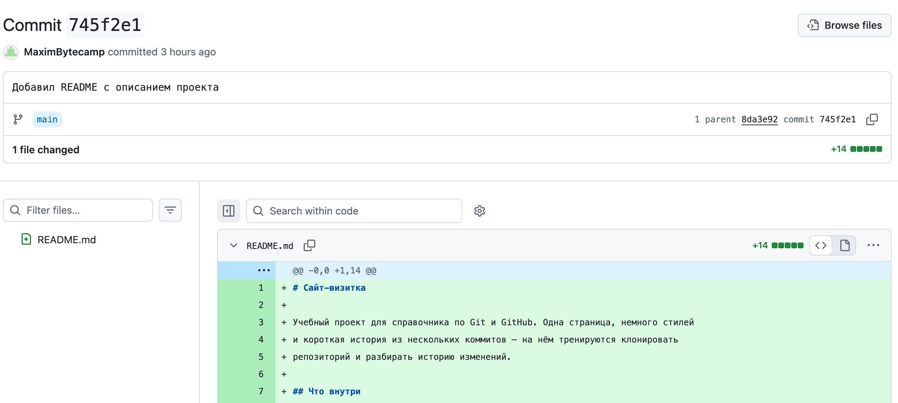
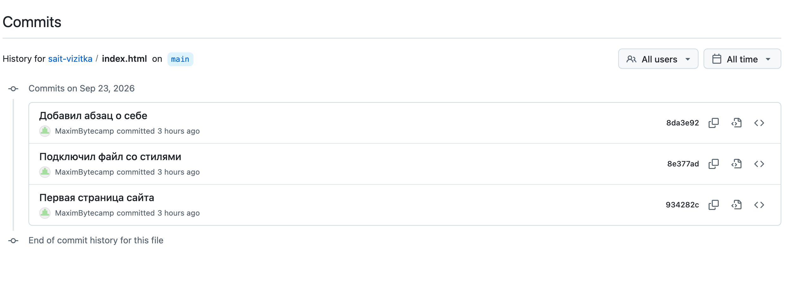
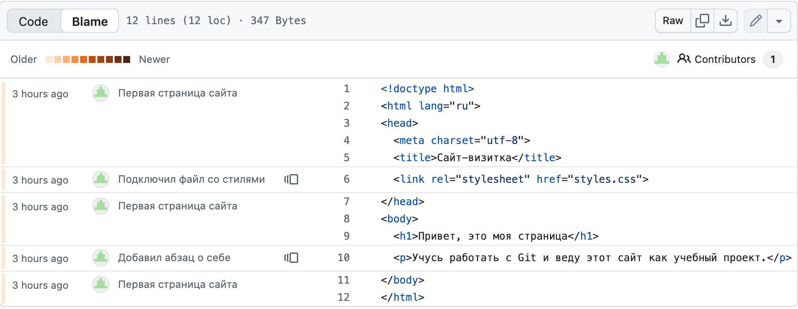

Справочник по Git и GitHub · модуль 2 · первый репозиторий в VS Code
Глава 2.4
История проекта:
граф, коммиты, авторы строк
В главе разобрано, как читать историю проекта: где она показана в VS Code, в терминале и на GitHub, что видно внутри коммита и как отобрать коммиты, менявшие один файл. В конце показано, как узнать, в каком коммите появилась строка и кто её автор.
- Категория
- Чтение истории
- Уровень
- Начальный
- Что получится
- Умение найти нужный коммит и автора любой строки
- Сколько занимает
- Около двадцати минут за компьютером
§1Зачем читать историю
История нужна, чтобы узнать, как и почему менялся проект:
Зачем это нужно в работе
- Найти коммит с ошибкой. Страница перестала работать после недавних правок. История показывает коммиты за это время, среди них ищут тот, что внёс ошибку.
- Разобраться в чужом коде. Назначение строки неясно. История показывает, в каком коммите и кем она добавлена, а сообщение коммита объясняет причину.
- Вернуть удалённый файл. Файл, удалённый месяц назад, остаётся в прошлых коммитах, и нужную версию достают из истории.
- Отчёт о работе. Список коммитов за неделю показывает, что сделано, с датами и сообщениями.
В главе используется проект sait-vizitka из прошлых глав. В нём шесть коммитов: четыре получены при клонировании, два сделаны в главе 2.3.
§2Шаг 1. Открыть раздел Graph
История проекта показана в панели Source Control.
Открываем панель Source Control. Под списком изменений находится раздел GRAPH. Если он слишком узкий, раздел CHANGES сворачивают щелчком по заголовку.

Синяя метка main отмечает коммит, на котором вы стоите. Фиолетовая origin/main отмечает последний коммит копии проекта на GitHub. Два коммита между ними сделаны у вас и на сервер не отправлены.

2↑ — два коммита не отправлены. Отправка разобрана в модуле 4.Строка Outgoing Changes вверху графа объединяет те же два неотправленных коммита.
Что получилось.Видна вся история: шесть коммитов, метки main и origin/main.
§3Шаг 2. Посмотреть, что внутри коммита
Каждый коммит в графе раскрывается в список файлов.
Нажимаем на коммит Добавил страницу контактов. Под строкой появляется список файлов коммита.

По этому списку проверяют, все ли нужные файлы вошли в коммит и нет ли лишних.
Что получилось.Видны файлы коммита «Добавил страницу контактов»: index.html и kontakty.html.
§4Шаг 3. Открыть изменения построчно
Изменения в файле коммита открываются построчно.
Дважды щёлкаем по файлу внутри коммита. Открывается окно сравнения. В нём сравниваются две версии файла: до этого коммита и после него.

745f2e1, справа — из коммита 2e4864c. Подсвечены различия между ними.Строки из букв и цифр в скобках — имена коммитов: сначала предыдущего, затем открытого. Эти имена разобраны в следующем параграфе.
Что получилось.Видно построчно, что этот коммит изменил в index.html.
§5Справка: имя коммита
У каждого коммита есть имя — длинная строка из букв и цифр, которую Git вычисляет по содержимому. Это хеш. В полном виде он выглядит так:
git log -1 --format=%H
745f2e16ef3422f5063e9dde2af6036fc8349ffe
Обычно используют первые семь символов: 745f2e1. Такие короткие имена показаны в графе, в выводе команд и в заголовке окна сравнения.
| Где встречается | Как выглядит | Что с ним делают |
|---|---|---|
Вывод git log --oneline | 745f2e1 | Копируют, чтобы открыть коммит или откатиться к нему |
| Заголовок окна сравнения | (745f2e1) ↔ (2e4864c) | Понимают, какие версии сравниваются |
| Страница коммита на GitHub | commit 745f2e1 | Ссылку на страницу отправляют коллеге |
Вывод git blame | 8da3e92e | Смотрят, из какого коммита пришла строка |
Для порядковых номеров нужен общий счётчик, а копия истории есть у каждого участника. Хеш вычисляется из содержимого коммита, поэтому один и тот же коммит имеет одно имя на любом компьютере, а изменённый коммит получает новое имя.
§6Шаг 4. История одного файла
Граф показывает историю всего проекта. Историю одного файла показывает раздел в проводнике.
Открываем файл index.html, переходим в проводник (CtrlCmd + Shift + E) и раскрываем внизу раздел TIMELINE.

index.html: четыре из шести. Справа указано, сколько времени прошло.Щелчок по строке открывает сравнение файла до коммита и после. Так находят коммит, после которого в файле появилась ошибка.
Что получилось.Видны четыре коммита, которые меняли index.html.
§7Шаг 5. То же самое в терминале
В инструкциях и на форумах историю показывают командами терминала.
Вся история коротким списком. Ключ --graph рисует слева линию истории; ветки на ней разобраны в модуле 3:
git log --oneline --graph
* 7a74ca0 Увеличил отступы страницы
* 2e4864c Добавил страницу контактов
* 745f2e1 Добавил README с описанием проекта
* 8da3e92 Добавил абзац о себе
* 8e377ad Подключил файл со стилями
* 934282c Первая страница сайта
История одного файла. Имя файла после двух дефисов оставляет в списке только коммиты, менявшие этот файл:
git log --oneline -- index.html
2e4864c Добавил страницу контактов
8da3e92 Добавил абзац о себе
8e377ad Подключил файл со стилями
934282c Первая страница сайта
Это тот же список, что в разделе TIMELINE: четыре коммита из шести.
Состав одного коммита. Команда git show с ключом --stat печатает изменённые файлы и число строк:
git show --stat --oneline 8e377ad
8e377ad Подключил файл со стилями
index.html | 1 +
styles.css | 11 +++++++++++
2 files changed, 12 insertions(+)
Без --stat команда печатает изменения построчно, как окно сравнения.
Что получилось.Те же сведения получены командами git log и git show.
§8Шаг 6. История на GitHub
На GitHub хранится копия отправленных коммитов, и историю читают там же. Это нужно, когда проекта нет на компьютере или коллеге отправляют ссылку.
На странице проекта нажимаем счётчик коммитов, например 4 Commits. Открывается список коммитов.

Открыть коммит. Щелчок по сообщению открывает страницу коммита с изменёнными файлами и строками.

745f2e1: 1 file changed, +14 — добавлено четырнадцать строк. Добавленные строки выделены зелёным, удалённые выделялись бы красным. Строка 1 parent ведёт к предыдущему коммиту.История файла. Открываем файл на GitHub и нажимаем кнопку History. Открывается список коммитов, менявших этот файл.

git log -- index.html.Что получилось.История проекта, отдельный коммит и история файла открыты на GitHub.
§9Шаг 7. Кто написал эту строку
Если назначение строки в файле неясно, перед удалением выясняют, в каком коммите и кем она добавлена.
Открываем файл на GitHub и переключаемся на вкладку Blame.

То же показывает команда git blame. Ключ -L задаёт диапазон строк:
git blame -L 9,11 index.html
^934282c (MaximBytecamp 2026-09-23 03:58:04 +0300 9) <h1>Привет, это моя страница</h1>
8da3e92e (MaximBytecamp 2026-09-23 03:58:04 +0300 10) <p>Учусь работать с Git…</p>
2e4864c4 (Student 2026-09-23 07:21:50 +0300 11) <p><a href="kontakty.html">Контакты</a></p>
В каждой строке ответа: имя коммита, автор, дата, номер строки и текст. По имени коммита открывают коммит и читают сообщение с причиной правки.
Ассоциация: поля учебника с пометками
В учебнике, где пометки оставляли несколько человек, у каждой пометки на полях стоят подпись и дата. По ним видно, кто и когда её сделал.
Blame подписывает каждую строку файла коммитом, автором и датой. По имени коммита открывается сообщение с причиной правки.
Где не совпадаетПометки на полях сохраняются все, а blame показывает только последнее изменение строки. Если строку позже правил другой человек, blame укажет его. Первоначального автора ищут в более ранних коммитах.
Что получилось.У каждой строки index.html виден коммит, автор и дата.
§10Как искать нужный коммит
В длинной истории коммиты отбирают по файлу, автору, слову в сообщении или дате.
| Что ищем | В терминале | На GitHub |
|---|---|---|
| Коммиты, менявшие файл | git log --oneline -- styles.css | Открыть файл → кнопка History |
| Коммиты одного автора | git log --author=Student | Список коммитов → фильтр All users |
| Слово в сообщении | git log --grep=контакт | Поиск по репозиторию с фильтром type:commits |
| Последние пять коммитов | git log --oneline -5 | Первая страница списка коммитов |
| Коммиты со вчерашнего дня | git log --since=yesterday | Список коммитов → фильтр All time |
Состав найденного коммита показывают git show --stat или щелчок в графе. Возврат к прошлой версии разобран в главе 2.6.
§11Частые вопросы
.git на вашем компьютере. Граф, Timeline и git log работают без сети. Сервер нужен для обмена коммитами.origin/main, в строке состояния видно число со стрелкой вверх.§12Проверьте себя
В графе метка main стоит выше метки origin/main. Что это значит?
У вас есть коммиты, которых нет на сервере: все коммиты между двумя метками сделаны локально и не отправлены. В строке состояния это показано числом со стрелкой вверх.
Страница перестала открываться. С чего начать разбор по истории?
Посмотреть последние коммиты: git log --oneline или раздел Graph. Затем открыть коммиты, сделанные после последней работающей версии, и посмотреть их состав. Если известен файл с ошибкой, список сужают: git log --oneline -- имя-файла.
Чем Timeline отличается от раздела Graph?
Graph показывает всю историю проекта, Timeline — коммиты, менявшие открытый файл. Тот же отбор делает команда git log -- имя-файла.
В заголовке окна сравнения написано index.html (745f2e1) ↔ index.html (2e4864c). Что с чем сравнивается?
Версия файла из коммита 745f2e1 (слева, более ранняя) с версией из коммита 2e4864c (справа). Подсвечены строки, которые между этими двумя коммитами изменились.
Назначение строки в файле неясно. Каков порядок действий?
Открыть файл на GitHub, вкладка Blame, найти строку и посмотреть коммит слева от неё. Затем открыть этот коммит и прочитать сообщение с причиной правки. На компьютере то же показывает git blame имя-файла.
Почему у коммита имя вида 745f2e1 и нет порядкового номера?
Имя вычисляется из содержимого коммита и не зависит от порядка и от компьютера. У каждого участника своя копия истории, поэтому общего счётчика для номеров нет.
§13Шпаргалка по главе
раздел GRAPH — вся история
раздел TIMELINE — история файла
main — где вы сейчас
origin/main — где сервер
git log --oneline --graph
git log --oneline -- файл
git show --stat хеш
вкладка Blame на GitHub
git blame -L 9,11 файл
--author=имя
--grep=слово
--since=yesterday
хеш, первые 7 символов
745f2e1
Итог главы
Историю проекта читают в нескольких местах, и везде показаны одни и те же коммиты. Раздел GRAPH в панели показывает всю цепочку с метками main и origin/main; щелчок по коммиту раскрывает список файлов, двойной щелчок — построчные изменения. Раздел TIMELINE оставляет только историю открытого файла. Те же данные дают команды git log, git show и git blame. На GitHub история открывается счётчиком коммитов, а вкладка Blame показывает у каждой строки файла коммит, в котором она появилась. Имя коммита — хеш, обычно его сокращают до семи символов. В следующей главе разобраны служебные файлы: как исключить из истории лишние файлы и описать проект в README.
- Кадры и ответы команд получены на клоне проекта sait-vizitka в Git версии 2.51.1.
- Разделы Graph и Timeline — документация VS Code, раздел Source Control.
- Ключи
git log,git showиgit blame— документация git-log, git-blame. - Устройство имени коммита — книга Pro Git.